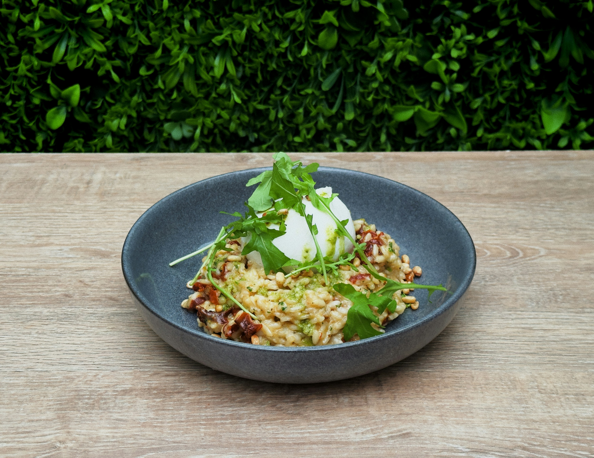

Warm, homely, anti-clinical. Tomato is appetite — a hero accent for action and the wordmark, never for alarm. Every calorie number stays ink.
Satoshi throughout. The voice style — italic, lowercase, lightly indented — is how the friend speaks. Numbers are rounded and prefixed with ≈; the rounding is the honesty.
A pure 8-pt scale — each bar’s width is its value.
gutter = 24
One soft shadow, and it belongs to a single thing: today’s note, sitting slightly proud of the fridge. Everything else is flat.
One duration (200ms) and one easing (ease-out), used only for meaningful state transitions: today’s note settling onto the fridge, the estimate range easing open, the once-a-day recipe nudge appearing, and the toggle knob sliding. Beyond these the interface stays still — with one exception, below.
Launch screen. A one-time brand greeting, shown once at start: a tomato grows to fill the screen, then settles and fades into the ‘o’ of the wordmark as Noted and the tagline ease in. It is the only motion longer than 200ms — the tomato’s settle is ≈ 900ms, with the wordmark and tagline following just after — and the only decorative animation in the system: a greeting, not a transition. It still rides the one ease-out, and honours reduced motion (the growing tomato is dropped; the wordmark simply appears).
Single-stroke line-art, 2px, rounded ends, drawn in ink. Simple beats detailed.
decorative · food
functional · ui
Diet / allergy selection and recipe filters — lighter than a button, so it reads as a selectable tag. Selection is positive: filled tomato, never an alarm. Each chip is a <label> wrapping a hidden .chip__input (checkbox for multi-select, radio for single-select); tapping toggles it — pure CSS, no JS.
The way in — a real field you can tap and type into. A slim prompt on home expands to a multiline field on the log screen. The low-confidence state stays calm: a question mark and ink, never red.
An honest, rounded ≈ you can trust at a glance. The exact range hides behind a tap on the number; macros sit quietly beneath, never competing.
The evidence under an estimate, tappable to correct. Names are uniform ink and medium-weight; the quantity is lighter. The same row is reused for search results.
White notes on the paper fridge. System rule: today’s note = tomato magnet + −1.5° tilt + shadow lift; the friend’s nudge = arugula magnet + +1.5° tilt (opposite) + same shadow lift; history = flat, no magnet. Cards stay calorie-≈ only.
fancy something green tonight?
A feed item, lighter than a note — no tilt, no magnet. The “in budget” pill uses arugula tint + green check icon + ink text; the “over budget” pill is focaccia tint + ink text — one family. Calorie numbers stay ink, never coloured. The one photographic exception: the marker can hold a photo thumbnail, and the recipe detail gets a header photo — every other illustration stays line-art.

lemony green orzo in budget · ≈ 500Home · Search · Recipes · Profile. Icon and label share a colour — ink when inactive, tomato when active. The active icon sits in a soft --tint-tomato pill (.tab__icon); inactive tabs are unchanged. Search drills into the describe screen; logging enters through the home prompt or the search tab. .tabbar--tight reduces the icon nest padding to 3px top/bottom (tighter icon↔label gap via --space-2).
The focal point of home — what’s left for today, rounded, in ink. Over budget is shown just as calmly: still ink, never red. An invitation, not a verdict.
Grounded reasons, never a sales pitch. Every claim is literally true against your remaining budget, diet, and allergens.
why this fits you
today
describe
Onboarding progress — goal, budget, diet, allergies.
A plain single-line field for the short inputs onboarding and profile need — chiefly the daily budget. Focus shows a calm neutral border (never tomato); keyboard users still get the ring.
A real checkbox — it toggles and the knob slides on tap, no JavaScript. On uses tomato, the same active accent as a selected chip or the current tab.
A prominent single-select for onboarding — pick a goal, or an activity level (compact). A real radio group, so one choice clears the others with no JS. Selected gets an accent border and a faint tomato wash, not a full red fill; the label stays ink.
A display-only pill for a single macro value. Shown in a row of three — protein · carbs · fat — as the day's tally. Each macro has its own tinted fill and accent text colour drawn from the design-system palette: tomato for protein, focaccia for carbs, arugula for fat. Not interactive — reads as information, never a target or a progress indicator.
Age / weight / height — inline drum picker, one open at a time. Tapping a row expands a scroll-snap drum in place; the chevron rotates and the value turns tomato. The drum itself is wired in JS; this specimen is static markup showing the closed and open states.
tomato is appetite, never alarm
The hero accent is for action, the wordmark, and today’s magnet. No state — over-budget, error, anything — ever turns red. Over budget reads calmly in ink (and a warm focaccia tint on recipes); the describe-input’s low-confidence state is a question mark and ink text, “didn’t quite catch that — redescribe?”
numbers are ink, rounded, with ≈
Every calorie figure stays ink and is rounded to the nearest 50 (large meals to 100), always prefixed with ≈. Macros round to the nearest 5g and sit quietly beneath the calorie hero — never competing. The rounding is the honesty signal; no fake-precise integers anywhere.
the voice
Lowercase, short, warm, curious. It never moralises, never labels food good or bad, and never uses debt language (“earned”, “make up for”). Balance is an invitation, and the friend speaks rarely — about once a day.
the mark · favicon
The tomato ‘o’ from the wordmark — a red tomato body with an arugula calyx — stands alone as the app’s mark: the browser favicon and the home-screen icon. It is the only place the glyph appears without the letters. It ships as a vector (assets/favicon.svg) so it stays crisp at any size — tomato body, arugula calyx, on a transparent ground.
accessibility
Interactive targets are at least 44px; 14px is the text floor; one tomato focus ring serves keyboard users. Every text element — labels, captions, timestamps, values, and wayfinding — is set in ink for AA contrast; muted is retained in the palette for hairlines, tracks, and affordance icons, but no longer used for text. (White-on-tomato measures ≈ 4.4:1 — essentially at the AA threshold for the 17px medium action labels; the tomato token is fixed by the brand.)